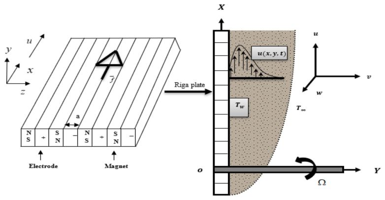
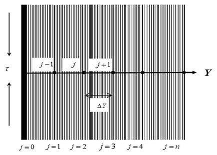

EMHD radiating fluid flow along a vertical Riga plate with suction in a rotating system Sheela Khatun · Muhammad Minarul Islam
2021
Abstract
This study is performed on the numerical investigation of electro-magnetohydrodynamic (EMHD) radiating fluid flow nature along an infinitely long vertical Riga plate with suction in a rotating system. The prevailing equations are generated from the Navier–Stokes’ and energy equations. A uniform suction velocity is introduced to control the flow. The prevailing boundary layer (BL) equations are the stuff to delineate the mechanical features of the flowing nature along with the electromagnetic device (Riga plate). Accordingly, the use of usual transformations on the equations transformed those into a coupled dimensionless system of non-linear partial differential equations (PDEs). After conversion, the elucidation of the set of equations is conducted numerically by an explicit finite difference method (FDM). The criteria for stable and converging solutions are constructed to find restrictions on various non-dimensional parameters. The retrieved restrictions are Pr ≥0.19,Rd ≥0.1,S ≥1, Ec = 0.01 and 0 < R ≤0.1 . Furthermore, sensitivity tests on mesh and time as well as comparison within the literature have been demonstrated in graphical and tabular form. Finally, the important findings of the non-dimensional parameters influences have been portrayed in graphical manner by using the MATLAB R2015a tool. A substantial uprise is noted for both the velocities (secondary and primary) under the rising actions of the modified Hartmann number, whereas the suction parameter suppresses both the velocities.
Figures from this paper
{kind=link}

{kind=link}

Citation
@article{9_2021_mar_khatun2021_article_emhdradiatingfl,
title = {EMHD radiating fluid flow along a vertical Riga plate with suction in a rotating system Sheela Khatun · Muhammad Minarul Islam},
year = {2021},
doi = {10.1007/s42452-021-04444-4},
url = {https://doi.org/10.1007/s42452-021-04444-4}
}